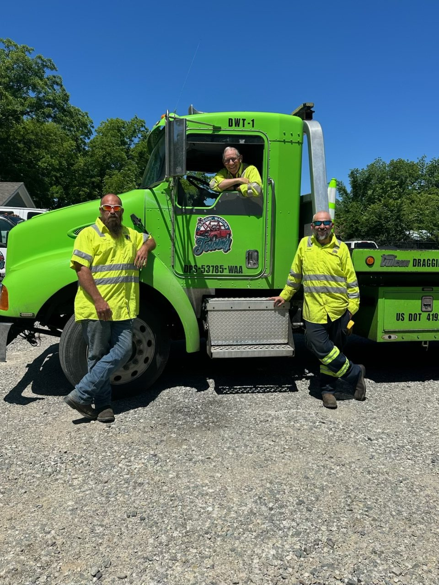

Draggin' Wagons Towing is a father-and-son operation based right here in Durant, Oklahoma. When you call, you're talking to the people who actually show up.
Draggin' Wagons Towing was started with a simple idea: when someone's stranded on the side of the road, they deserve a company that answers the phone, shows up fast, and treats them right. Proudly veteran-owned, the company is run today by father-and-son co-owners Russ Parker and Shane Parker, a hometown crew that knows Bryan & Marshall County's roads and takes care of its neighbors.

Founder of Draggin' Wagons Towing, with years of experience keeping Southeastern Oklahoma moving. Hands-on, on the trucks, and on the phone when you call.
Second-generation operator carrying on the family business, focused on fast response times and taking care of every customer like family.
Breakdowns don't wait for business hours, and neither do we.
A father & son team that treats every customer like a neighbor.
Local, Durant-based trucks mean quicker arrival times across Bryan & Marshall County.
Proudly veteran-owned, with the same discipline and reliability that comes with military service.